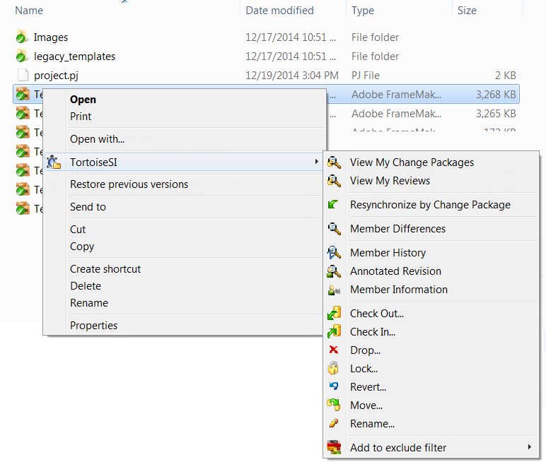

TortoiseSI is a free, open-source Microsoft® Windows® shell extension client for PTC Integrity that exposes PTC Integrity views, source commands, and version-controlled member actions on Windows files and folders through Windows Explorer. PTC Integrity is a cross-platform, enterprise-class software configuration management and versioning solution.
TortoiseSI offers you a light-weight open-source interface to perform various Integrity Sandbox and member operations, access Integrity data views, and commit changes to the repository. TortoiseSI displays icon overlays in Windows Explorer to indicate working file status in the file system.
This guide is intended for anyone interested in accessing Integrity views and performing Integrity operations directly from the Windows Explorer interface.
Since TortoiseSI is a Windows shell extension, this documentation assumes that the user is familiar with and proficient at using Microsoft Windows Explorer.
Developers who are interested in getting involved with the TortoiseSI project can refer to the GitHub TortoiseSI wiki.
TortoiseSI commands are available from the Windows Explorer context menu, and they are visible when you right-click on a file, folder, or subfolder.
The TortoiseSI context menu commands update dynamically based on selection context. You can also see the TortoiseSI menu as part of the Windows Explorer File menu.

If you encounter any problems during or after installing TortoiseSI, please refer to the Troubleshooting Tips section first before contacting us.
TortoiseSI comes with a straightforward installer Setup Wizard. Double-click on the installer file and follow the instructions. The installer takes care of the rest.
To download a TortoiseSI build:
TortoiseSI may be available in additional languages as an MSI language pack installer file. If a specific language translation is not yet available, consider submitting your own translation to the project via the TortoiseSI GitHub project page.
TortoiseSI uses the appropriate language pack for the configured Windows Display Language when installed and available. For example, when the Windows Display Language is set to German and the German TortoiseSI language pack is installed on the system, the TortoiseSI interface displays in German.
Notes:
To download and install TortoiseSI language packs:
You can install a newer build version of TortoiseSI directly on top of your existing installation.
You do not need to uninstall your current TortoiseSI application first.
Once TortoiseSI is installed on the system, you can verify that the install was successful by creating a Sandbox in Integrity.
TortoiseSI automatically connects to the Integrity Server. The specific server is based on your Integrity Client preferences.
If you are not prompted to connect to an Integrity Server, verify that the Integrity Client is running, and that the client application can communicate with an Integrity Server.
If TortoiseSI loses its connection to the Integrity Server, it will work silently in offline mode. To force a connection to the Integrity Server, perform an operation that requires a server connection, such as viewing a Sandbox via the Integrity Sandbox view.
Note: The user needs to be notified if TortoiseSI cannot find an Integrity Client installed on the system. This feature will be implemented in a future release. For more information, see open issue 41 in the GitHub TortoiseSI issue tracker.
If you are unable to see the TortoiseSI icon overlays on files and folders in Windows Explorer, restart Windows Explorer or reboot the machine.
TortoiseSI only supports files located on fixed local drives.
File locations that are not supported by TortoiseSI include optical drives, network drives, and mass storage devices. If a file location is not supported, the TortoiseSI context menu is not available.
If you have more than one Integrity Client installed on the machine, TortoiseSI uses the first Integrity Client on the PATH environment variable. For more information on debugging non-standard configurations, such as running multiple Integrity Clients, see the GitHub TortoiseSI wiki.
Using TortoiseSI, you can perform various Integrity Sandbox operations. An Integrity Sandbox is a local pointer to an Integrity project residing on the Integrity Server. A Sandbox on the file system functions as a mirror image of a version-controlled Integrity SCM (software configuration management) project. Each Integrity Sandbox is actually a collection of pointers to files in the master project. Integrity Sandboxes allow you to work locally in your own workspace, without interfering with the work of others.
The following Integrity Sandbox operations are available using TortoiseSI. The equivalent Integrity command is listed for each supported TortoiseSI Sandbox operation.
Note: Where applicable, TortoiseSI commands launch additional Integrity commands, dialogs, and workflows. Integrity operations follow configured Integrity Client preferences.
For information on Integrity Sandbox operations, Integrity commands, or Integrity Client preferences, see the PTC Integrity User Guide, Integrity Help Center, or Integrity CLI man pages.
| Sandbox Operation | Integrity Operation & Command | TortoiseSI Command |
|---|---|---|
Create Sandbox |
Create a private version-controlled project workspace on the file system that mirrors the content of a project on the Integrity Server. Integrity command: si createsandbox Note: You cannot create Sandboxes in other Sandboxes (co-located Sandboxes) using TortoiseSI. If you have previously created co-located Sandboxes manually, TortoiseSI may not function as expected in the associated folders. |
TortoiseSI > Create Sandbox |
Resynchronize by Change Package |
When the files you are resynchronizing have changes that were made in the context of a change package, you can also resynchronize files in a Sandbox by change package. Resynchronizing by change package finds all files that were modified in an associated change package and all change packages that may be associated with the related files. However, only the change packages associated with the specific files you selected to resynchronize are processed. Caution: Resynchronizing can overwrite Sandbox files and can result in you losing data, even when the files are locked. Also, when files are dropped from a project, resynchronizing can delete those files from the file system. Integrity command: si resync --bycp |
TortoiseSI > Resynchronize by Change Package
|
Resynchronize an Entire Sandbox |
Resynchronize the contents of an entire Sandbox from the top level regardless of whether the top folder or a child subfolder is in context. Caution: Resynchronizing can overwrite Sandbox files and can result in you losing data, even when the files are locked. Also, when files are dropped from a project, resynchronizing can delete those files from the file system. Integrity command: si resync |
TortoiseSI > Resynchronize Entire Sandbox Select a Sandbox folder or a file within a Sandbox. |
Drop a Sandbox |
Remove a selected Sandbox from the top level. When you drop an Integrity Sandbox, that folder on the file system is no longer registered with Integrity or accessible by Integrity. Tip: During the drop Sandbox operation, you can choose not to delete the Sandbox from the file system, so that you can continue working on those files, though they will no longer be associated with Integrity. Integrity command: si dropsandbox |
TortoiseSI > Drop Sandbox Select a Sandbox folder. |
Retarget a Sandbox |
Retarget a selected Sandbox to change the Integrity project configuration that the Sandbox points to. For example, you can retarget the Sandbox to point to a different variant project or a different checkpoint revision. Integrity command: si retargetsandbox Note: The Retarget Sandbox operation does not change the project or server for a Sandbox, nor does it change the location of a Sandbox in Integrity. |
TortoiseSI > Retarget Sandbox Select a Sandbox folder. |
Submit Changes to the Repository |
Review a summary of all changes made on disk, and then submit those changes to the repository using the Integrity Client’s Working File Changes view. See the section Committing Changes to the Repository for details. |
TortoiseSI > View Working File Changes Select a Sandbox folder. |
With TortoiseSI you can perform various Integrity member operations to files in a Sandbox for Integrity version-controlled projects. Member operations are applied to the version-controlled project in Integrity after the related change package is submitted.
Note: Where applicable, TortoiseSI commands launch additional Integrity commands, dialogs, and workflows. Integrity operations follow configured Integrity Client preferences.
The following member operations are available using TortoiseSI. The equivalent Integrity command is listed for each supported TortoiseSI member operation.
For information on Integrity member operations, Integrity commands, or Integrity Client preferences, see the PTC Integrity User Guide, Integrity Help Center, or Integrity CLI man pages.
| Member Operation | Integrity Operation & Command | TortoiseSI Command |
|---|---|---|
Add |
Add a file or multiple files to a Sandbox. Once you add files to a Sandbox, you can check out the files for editing, and then check in the files to preserve your changes. Integrity command: si add |
TortoiseSI > Add Select a file or multiple files in a Sandbox. |
Drop |
Remove a file or multiple files from a Sandbox to drop the file(s) from an Integrity version-controlled project. After dropping files, the member’s history remains in the project in case you need to re-create a version of the project later. Tip: During the drop member operation, you can choose not to delete the member from the file system, and that member remains visible in the Sandbox as a former member. Integrity command: si drop |
TortoiseSI > Drop Select a file or multiple files in a Sandbox. |
Lock |
Lock a file or multiple files in a Sandbox to prevent other users from checking in changes to the same revision you are working on in a version- controlled Integrity project. Typically, files are locked when you check out files to a Sandbox. However you may have made changes to a working file that you did not check out. You can set a lock on the working file without overriding your changes. Integrity command: si lock |
TortoiseSI > Lock Select a file or multiple files in a Sandbox. |
Resynchronize by Change Package |
Resynchronize files in a Sandbox by change package to update out of sync working files to the most current member revisions. For details, see Resynchronize by Change Package in the TortoiseSI Sandbox Operations section. |
TortoiseSI > Resynchronize by Change Package Select a file or multiple files in a Sandbox. |
Check In |
Check in a file or multiple files from a Sandbox to preserve your changes as new file revisions in a version-controlled Integrity project. checking in a file creates a new revision of the member(or creates a new branch) in Integrity and adds the revision to the member history. Integrity command: si ci |
TortoiseSI > Check In Select a file or multiple files in a Sandbox. |
Check Out |
Check out a working revision of a file or multiple files from a version-controlled Integrity project that you want to work on in a Sandbox. When you check out a revision, the revision is copied to the Sandbox where you can view or modify its contents. By default, when you check out a revision, a lock is placed on the member in Integrity, though this is configurable in the Integrity Client. Integrity command: si co |
TortoiseSI > Check Out Select a file or multiple files in a Sandbox. |
Revert |
Revert a file or multiple files to discard your changes in the Sandbox. When you revert files, your file system contents match the working revision from the version-controlled Integrity project. Integrity command: si revert |
TortoiseSI > Revert Select a file or multiple files in a Sandbox. |
Move |
Move a file or multiple files between Sandboxes. Integrity command: si move Notes:
|
TortoiseSI > Move Select a file or multiple files in a Sandbox. |
Rename |
Rename a file in your Sandbox. Integrity command: si rename Note: Renamed file status information available via TortoiseSI File Properties is visible only for deferred operations. |
TortoiseSI > Rename Select a file in a Sandbox; single file selection only. |
You can use the Integrity Client’s Working File Changes view to compare the file system against the version-controlled Integrity project. The view lists all of the files, folders, and subfolders that have been added, updated, or deleted.
To commit changes to the repository, right-click on an Integrity Sandbox and select TortoiseSI > View Working File Changes to access the Integrity Client Working File Changes View.
Use this view to move selected files to Integrity change packages. Submit selected Integrity change packages to commit those changes to the repository. For more information on Integrity change packages and the Working File Changes view, see the PTC Integrity User Guide.
Notes:
With TortoiseSI you can perform various Integrity view operations on files in your Sandbox for Integrity version-controlled projects.
The following view operations are available using TortoiseSI. The equivalent Integrity command is listed for each supported TortoiseSI view operation.
For information on Integrity view operations or Integrity commands, see the PTC Integrity User Guide, Integrity Help Center, or Integrity CLI man pages.
| View Operation | Integrity Operation & Command | TortoiseSI Command |
|---|---|---|
View Annotated Revision |
Instead of reviewing revision details of a file one revision at a time, you can see revision details for all changes to a specific file in an annotated view of the file contents. For example, you can view the annotated revision to find out which revision introduced a particular line of code. Note: Annotated details include only added or changed content per revision; deleted content is not displayed. Integrity command: si annotate |
TortoiseSI > View Annotated Revision Select a file in a Sandbox; single file selection only. |
View History |
Review detailed information about each revision and all the changes made since a file was put under version control by reviewing the file’s history. Integrity command: si viewhistory |
TortoiseSI > View History Select a file in a Sandbox; single file selection only. |
View Member Differences |
Compare a file in a Sandbox to the member revision, and see the differences between the two revisions highlighted in blocks. Integrity command: si diff |
TortoiseSI > View Member Differences Select a file in a Sandbox; single file selection only. |
View Member Information |
Display information for a file in a Sandbox, including Integrity project and path details, member revision details, and more. Integrity command: si memberinfo |
TortoiseSI > View Member Information Select a file in a Sandbox; single file selection only. |
View Sandbox |
Open the contents of a Sandbox in the Integrity Client Sandbox view. The Integrity Sandbox view displays project members and subprojects in a tree structure. Integrity command: si viewsandbox |
TortoiseSI > View Sandbox Select a Sandbox folder or a file within a Sandbox. |
View Working File Changes |
Review a summary of all files, folders, and subfolders that have been added, updated, or deleted in the file system. You can also use this view to submit changes to the repository. See the section Committing Changes to the Repository for details. |
TortoiseSI > View Working File Changes Select a Sandbox folder. |
TortoiseSI status indicators appear as icon overlays on Integrity version- controlled files in Windows Explorer. These icon overlays show you, at a glance, what has been modified on the file system.
The following table lists the TortoiseSI file icon overlays available for each Integrity member status. For more information on Integrity member status, see the PTC Integrity User Guide, Integrity Help Center, or Integrity CLI man pages.
| Integrity Member Status | TortoiseSI File Icon Overlay | Limited File Icon Overlay Subset |
|---|---|---|
|
Add Member A blue plus sign indicates files that exist in a file system folder that are not yet members of a version-controlled Integrity project. |
|
|
|
Drop Member or Former Member A red X icon indicates files that have been deleted(dropped from a version-controlled Integrity project. A local copy of the dropped file, called a Former Member, may remain in the Sandbox. |
|
|
|
Member A green checkbox icon indicates files that correspond to members of an Integrity version-controlled Sandbox. |
|
N/A |
|
Locked Member A yellow lock icon indicates files that have been locked in an Integrity version-controlled project. |
|
|
|
Modified Member, Moved Member, Renamed Member or Merge Needed A red exclamation mark icon indicates files that have been modified and require a merge, files that have been moved, or files that have been renamed locally in the file system. |
|
N/A |
|
Incoming Member Conflict A yellow exclamation mark icon indicates files that are currently out of synchronization with the Integrity version-controlled project (including files have been modified locally and remotely, or files that have unresolved merge operations). Further action is required in Integrity. |
|
|
Notes:
To display the Integrity configuration management member properties for a file under version control, right-click on a file and select Properties > TortoiseSI.
Note: The TortoiseSI tab is not visible for files that are not in a version-controlled Integrity project.
The following Integrity Configuration Management properties are displayed.
| Column | Description |
|---|---|
Member Revision |
The default revision that users work with in Sandboxes for this file. |
Working Revision |
The revision number on which the selected file is based. |
Working CP ID |
The change package containing the operations for the file. |
|
Lock Name |
The name of the user locking the member revision, the change package ID associated with the lock, and type of lock on the member. |
Status |
The Integrity member status, such as a deferred operation. |
Sandbox Name |
The path to the Integrity Sandbox that contains the file. |
For more information on working with Integrity members, see the PTC Integrity User Guide, Integrity Help Center, or Integrity CLI man pages.
You can use TortoiseSI to exclude uncontrolled files in a Sandbox from appearing in selections when adding members to a version-controlled Integrity project. For example, you may want to always avoid adding specific DLL files or all EXE files without having to remember to exclude them manually. Excluded files are added to the Integrity Client Non-Member Files exclusion filter preference.
Note: You cannot use TortoiseSI to remove excluded entries from the exclude filter. You must use the Integrity Client Preferences Configuration dialog to remove Non-Member Files Filter entries from the exclude filter. For more information, see the PTC Integrity User Guide, Integrity Help Center, or Integrity CLI man pages.
This is a pre-release product and a work in progress. Both the TortoiseSI product and this documentation are subject to change.
Details about how to contribute to the TortoiseSI project can be found on the TortoiseSI GitHub project page and the associated GitHub TortoiseSI wiki. For this pre-release product, all defects or enhancement requests should be managed through the GitHub TortoiseSI issue tracker or communicated to the TortoiseSI project team by email: alm-oss@ptc.com.